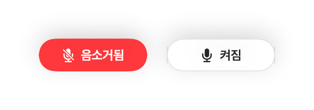

Mac 어디서나 단축키로 Slack 허들 음소거하는 방법
Slack의 허들 컨트롤은 다른 작업 창 뒤에 가려지기 쉬운 작은 창에 있으며, 자체 음소거 단축키도 Slack이 맨 앞에 있을 때만 작동합니다.
Muffle은 Mac 어디서나 단축키 하나나 AirPods 조작으로 Slack을 포함한 모든 앱의 마이크를 음소거해 줍니다.
Muffle 3일 무료 체험하기Mac App Store 출시 예정
어디서나 허들 음소거하기
- Muffle을 설치하고 마이크 접근 권한을 허용합니다.
- Slack에서 허들을 시작하거나 참여합니다.
- Control-Option-M 또는 AirPods 스템을 눌러 음소거합니다.
- 메뉴 막대를 확인하세요. 빨간색이면 상대방에게 소리가 전달되지 않는 상태입니다.

- 화면에 떠 있는 미니 컨트롤러를 통해 모든 허들 통화 중 마이크 상태를 바로 확인할 수 있습니다.
- 음소거 상태를 유지하면서 짧게 말해야 할 때는 단축키를 길게 누르세요.
자주 묻는 질문
Slack 앱과 웹 브라우저의 Slack 모두에서 작동하나요?
네, 작동합니다. Muffle은 마이크 자체를 음소거하므로 둘 다 완벽하게 지원합니다.
팀원들에게 내가 음소거된 것으로 보이나요?
Slack 화면에는 마이크가 켜진 상태로 표시될 수 있습니다. 하지만 Muffle이 음소거한 상태에서는 팀원들에게 아무 소리도 전달되지 않습니다.